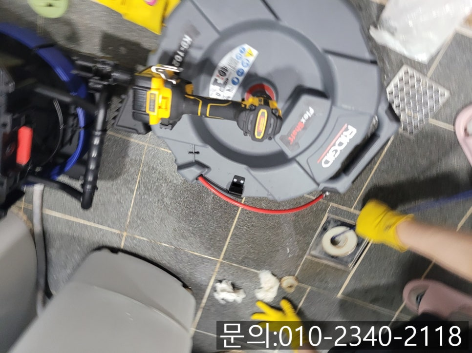
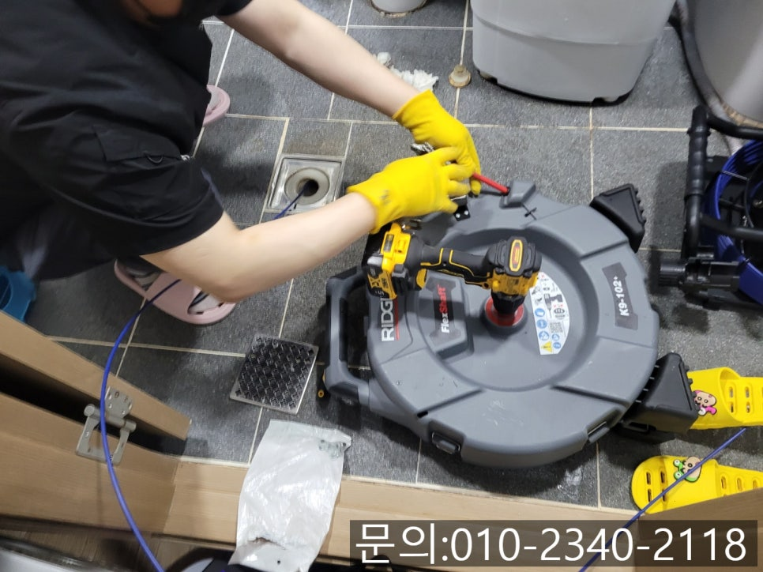
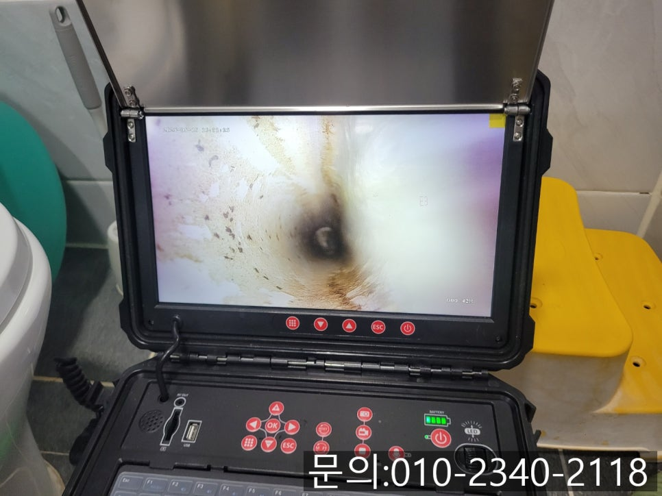
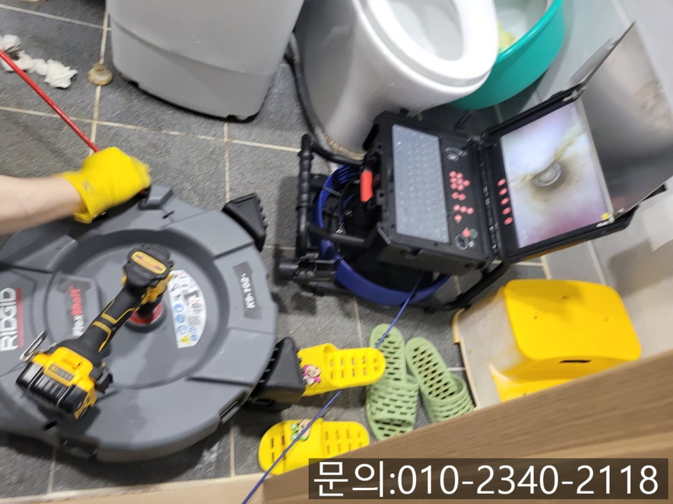
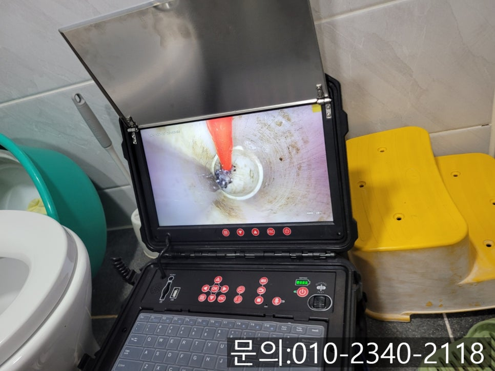
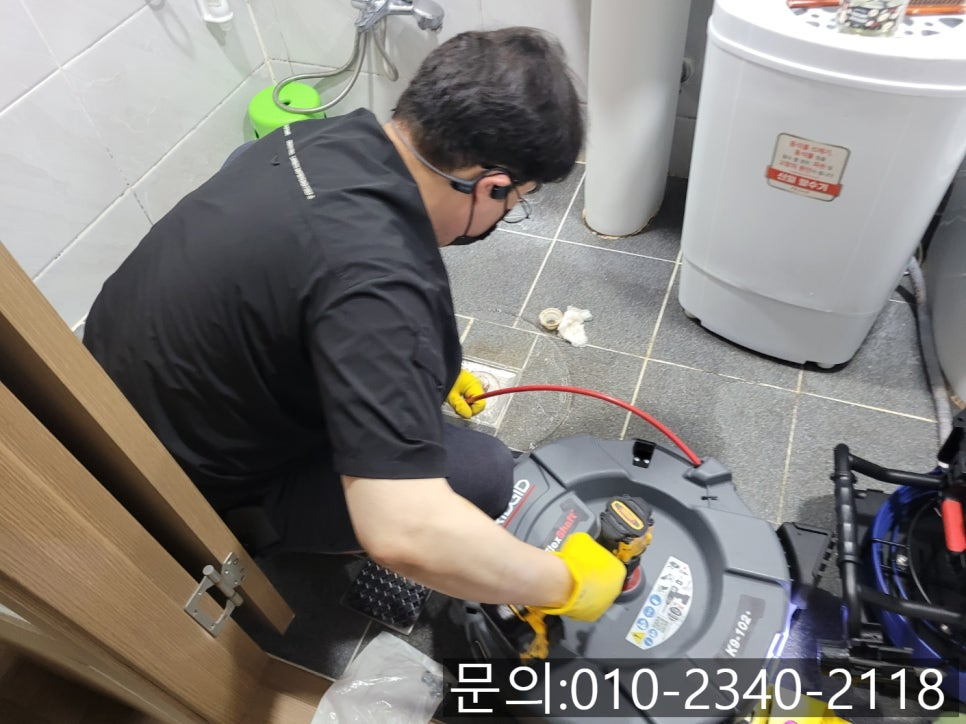

🏠 포승읍 화장실 바닥 막힘 평택 청북읍 아파트 하수구 역류 뚫는 설비 업체
평택 하수구막힘 전문 시공 후기

📋 작업 개요
- 위치: 평택
- 서비스 유형: 하수구막힘, 배관막힘, 역류해결, 뚫는업체, 배관청소
- 작업 일시: 2025. 5. 19. 20:00
- 업체명: 하수구수사대 (010-5615-2118)
🔍 문제 상황
안녕하세요.
포승읍 화장실 바닥 막힘, 평택 청북읍 아파트 하수구 역류 뚫는 설비 업체 하수구 다큐입니다.
출근 준비로 바쁜 아침, 샤워를 하는데 화장실 바닥에 물이 아주 느린 속도로 흘러내려 간다면 얼마나 당황스러울까요?
물이 빠지기를 기다리자니 시간이 오래 걸리고, 그냥 준비하자니 화장실 바닥에 고여있는 물로 인해 출근 준비가 불편해집니다.
화장실은 여러 가지 이유로 하루에 여러 번 사용하는 공간입니다.
욕실 바닥의 배수구는 세면, 샤워, 청소 등 다양한 용도로 물을 흘려보내는 통로입니다.
하지만 평소엔 잘 모르고 지나치다가도, 한번 포승읍 화장실 바닥 막힘이 발생하기 시작하면 일생생활에 큰 불편을 초래하죠.
특히 여러 세대가 거주하는 아파트의 경우 구조상 배관이 여러 세대와 연결되어 있어, 문제의 원인이 내 집이 아닐 수도 있다는 점에서 더욱 복잡하게 느껴질 수 있습니다.

🔎 원인 분석
💡 전문가 진단: 정밀 진단 장비를 사용하여 슬러지의 고착 여부를 판명하고 타격/세척 작업을 실시했습니다.
그렇다면 아파트 화장실 바닥이 막히는 이유는 무엇이고, 어떻게 해결할 수 있을까요?
지금부터 포승읍 화장실 바닥 막힘의 주요 원인과 해결하는 방법에 대해 정리해 드릴게요.
포승읍 화장실 바닥 막힘의 주요 원인
머리카락과 이물질 누적
샤워하거나 머리를 감을 때 빠진 머리카락이나 비누 찌꺼기, 먼지 등이 배수구에 쌓여 물의 흐름을 방해합니다.
2. 화장실 청소 중 이물질 투입
청소하는 과장에서 더러운 물이나 걸레로 인해 들어간 오염물질이 배관에 쌓일 수 있습니다.
3. 이웃 세대의 배관 문제
아파트는 배관이 연결되어 있어 위층에서 흘려보낸 이물질로 인해 영향을 받을 수 있습니다.

🔧 작업 과정
간단하게 화장실 바닥이 막히는 원인에 대해 알아봤는데
이번엔 평택 청북읍 아파트 하수구 역류 뚫는 설비 업체 하수구 다큐가 다녀온 현장을 사진과 함께 소개해 드릴게요.
화장실에서 샤워를 하면서 사용한 물이 잘 내려가지 않는다고 저녁 늦은 시간 고객님의 전화를 받았습니다.
9시가 넘었는데 바로 와서 작업이 가능한지 물어보셔서 고객님께 주소를 받아 신속하게 방문해 드렸어요.
화장실 바닥 막힘에 필요한 장비를 챙겨 현장에 들어가 보니 바닥에 물이 고여있는 상태였어요.
석션으로 고여있는 물을 제거한 다음 내시경 카메라를 이용해 막힘의 원인을 파악해 보기로 했습니다.
내시경 카메라가 배관 내부로 진입하자 내부가 깨끗해 보였는데요.
조금 더 깊은 배관으로 들어가 보니 이물질이 쌓여있는 걸 확인할 수 있었습니다.
평택 청북읍 아파트 하수구 역류 뚫는 설비 업체 하수구 다큐는 막힘의 원인을 파악한 뒤 고객님께 작업 계획과 발생되는 비용에 대해 자세히 안내해 드리고 플렉스 샤프트 장비를 이용해 작업을 진행하기로 했습니다.
플렉스 샤프트 장비는 노즐 끝에 달린 체인이 본체에 연결한 전동드릴의 회전하는 힘을 받아 배관 내부에서 회전하면서 이물질을 제거하는 작업을 하게 됩니다.
배관에 붙어있는 기름 슬러지는 타격해 잘게 부숴주거나 떨어트려주는 역할을 하는데요.
부서지지 않는 머리카락 같은 이물질은 체인에 걸어 제거해 주게 됩니다.
내시경 카메라를 이용해 배관 내부를 꼼꼼하게 살펴보며 플렉스 샤프트로 꼼꼼하게 청소를 진행하자 배관을 막고 있던 이물질이 제거되면서 물이 빠지기 시작했습니다.
배관 깊은 곳에서 물의 흐름을 방해하던 이물질을 모두 제거하자 깨끗해진 배관 내부를 확인할 수 있었어요.


✅ 작업 완료
온 가족이 다양한 이유로 사용하고 있는 화장실!
지금 화장실 배관에 문제가 있다면 연락주세요.
시원하게 뚫어드리겠습니다.
경기도 평택시 고덕중앙로 322 4층 129호




⚠️ 하수구 배관 막힘 예방 및 관리 가이드
- ✅ 머리카락, 비닐, 물티슈 등 물에 분해되지 않는 이물질은 하수구 유입을 절대 금지해 주세요.
- ✅ 하수구 거름망을 씌우고 모여진 이물질은 주기적으로 쓰레기통에 바로 비워주셔야 합니다.
- ✅ 배관 노후가 심할 경우 이물질이 더 쉽게 걸리므로 주기적인 배관 세척(고압세척 등)을 권장합니다.
- ✅ 작업 후 1년 이내 재발 시 하수구수사대에서 무상 A/S 보증 서비스를 제공합니다.
💡 핵심 정리
- 확실한 장비 작업(내시경 점검 및 샤프트 스케일링)으로 원인을 뿌리 뽑습니다.
- 작업 후 1년 이내에 동일한 부위 재발 시 100% 무상 A/S 서비스를 보장합니다.
- 서울 · 경기 · 인천 전 지역에 24시간 언제든 긴급 출동할 수 있도록 항시 대기 중입니다.
❓ 자주 묻는 질문 (FAQ)
🚨 평택 하수구막힘 문제로 고민이신가요?
정확한 원인 진단과 확실한 시공으로 재발 없는 해결을 약속드립니다.
24시간 긴급 출동 | 서울 · 경기 · 인천 전지역 | 1년 내 재발 시 무상 A/S